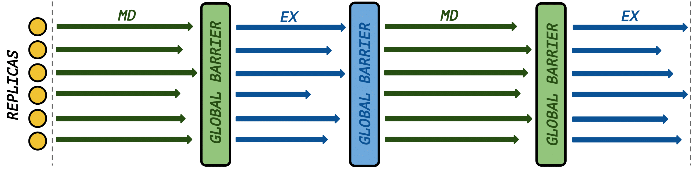

RepEx
This project is maintained by radical-cybertools
RepEx: Replica Exchange simulations package
RepEx package is designed to provide functionality to run multi-dimensional Replica Exchange (RE) simulations while decoupling the total number of replicas from the allocated CPU cores. Currectly RepEX supports NAMD and Amber MD engines. RepEx allows to perform RE simulations on local (user workstation) and remote (HPC cluster) systems. Currently three exchange parameters are supported: temperature, salt concentration and umbrella sampling.
Theory of Replica Exchange simulations
In RE simulations N replicas of the original system are used to model phenomenon of interest. Typically, each replica is treated as an independent system and is initialised at a different temperature. While systems with high temperatures are very good at sampling large portions of phase space, low temperature systems often become trapped in local energy minima. RE method is very effective in addressing this issue and generally demonstrates a very good sampling. In RE simulations, replicas of both higher and lower temperature sub-sets are present. During the simulation they exchange full configurations at different temperatures, allowing lower temperature systems to sample a representative portion of phase space.
Synchronization flexibility
One of the distinctive features of RepEx is synchronization flexibility. A user can choose a synchronization pattern independently of the MD engine in use and independently of the number of available computational resources.Synchronous RE

Synchronous RE is a conventional way of running RE simulations, where all replicas propagate MD simulations for a fixed period of simulation time-steps (e. g. 2 ps) before any of the exchanges can happen. The (physical) execution time for replicas is not fixed, as all replicas must finish a fixed-number of time-steps before the exchange takes place. Only after all replicas has finished MD simulation, replicas can start exchange parameters. As a result, fast replicas have to wait for slow replicas at the synchronization barrier.
Asynchronous RE

In asynchronous RE we don't have a global synchronization barrier. While some replicas are performing MD simulation, some other replicas might be performing an exchange or simply be in indle state. To determine at which point replicas must start exchanging parameters (after completing MD simulation) we use a parameter called wait ratio. Wait ratio specifies the ratio of replicas which have already completed MD simulation to the total number of replicas. In other words we specify for how many replicas out of N replicas we have to wait, before we can proceed to exchange of parameters for this subset of replicas. Wait ratio is a lower bound: we specify at least how many replicas have to finish MD simulation. In practice the number of replicas which will proceed to exchange might be larger.
Execution flexibility
An important feature of RepEx is explicit decoupling of the number of replicas from the number of CPU cores. Two modes are supported: we can have less CPU cores, than replicas and we also can have more CPU cores than replicas for any type of RE simulation. Any of the execution modes can be used for both, synchronous and asynchronous RE.
Execution mode I
In execution mode I the number of available CPU cores is equal to or is greater than the total number of replicas. As a result, we have enough computational resources to run all replicas concurrently. Note: this execution mode is not limited to synchronous RE.
Execution mode II

In execution mode II we don't have enougth CPU cores to run all replicas concurrently (only a subset of replicas can run concurrently). This results in replicas being executed in batches. Note: this execution mode is not limited to synchronous RE.